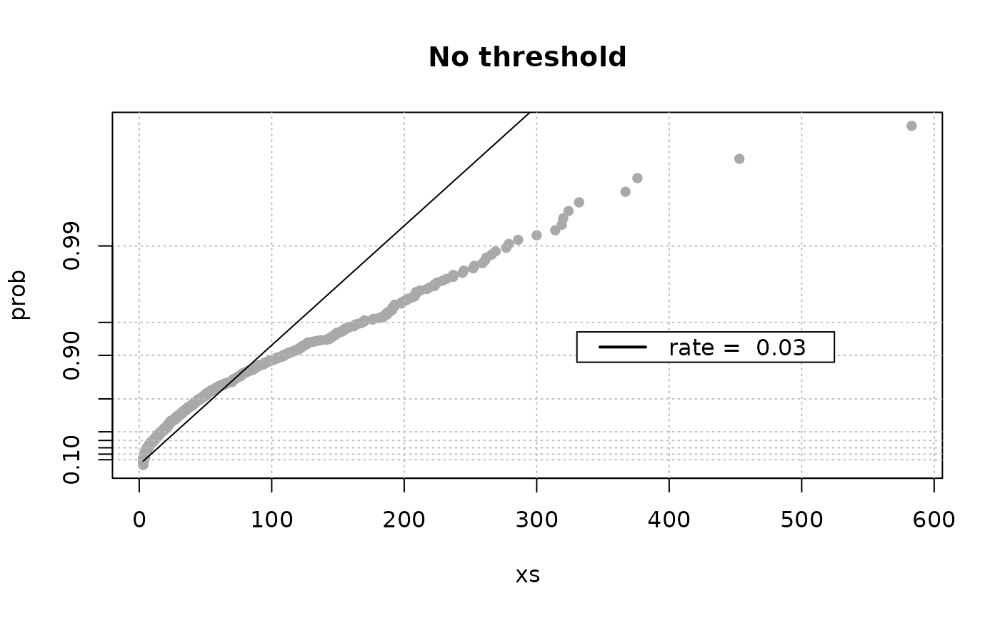
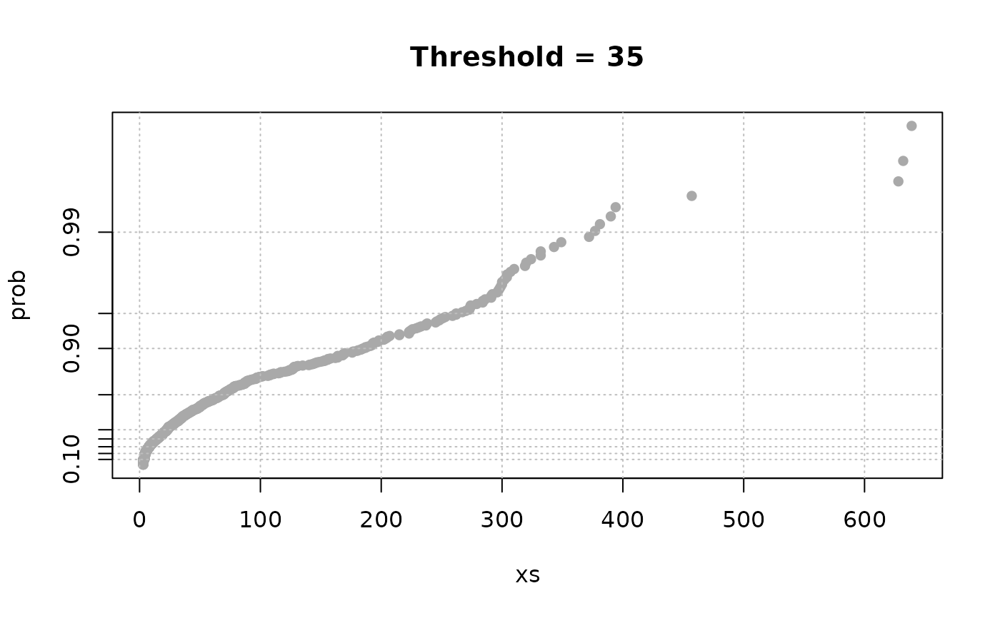

Interevents (or interarrivals) from events dates
interevt.RdCompute intervent durations from events dates
Details
Interevents are the time differences between successive dates. When
the date argument contains occurrence times \(T_i\)
for successive events of an homogeneous Poisson process, interevents
\(T_i -T_{i-1}\) are mutually independent with the
same exponential distribution.
When some time intervals are skipped independently from the event
point process, we may consider the interevents
\(T_i-T_{i-1}\) between two non-skipped events such
that the time interval \((T_{i-1},\,T_i)\) does not
contains any skipped interval. These interevents still are mutually
independent with the same exponential distribution. When skip
or noskip is not NULL the computation therefore only
retains couples of two successive datetimes "falling" in the same
non-skipped period, which number can therefore be associated with the
interevent.
Value
A list mainly containing a interevt data.frame.
- interevt
-
Data.frame. Each row describes a retained interevent through a
periodinteger giving the "noskip" period, astartandendPOSIXctand adurationin days. - noskip
-
Only when
skipornoskipargs have been given. A data.frame containing broadly the same information as thenoskiparg is it was given or the information deduced from theskiparg if given. - axis
-
When needed, a list with some material to build an axis with uneven ticks as in the
gof.datewithskip.action = "omit".
Note
Only one of the two arguments skip and noskip should be
given in the call. In each case, the rows of the returned data.frame
objects describe periods in chronological order. That is: start
at row 2 must be after the end value of row 1 and
so on.
Note that there are usually less interevents than dates since two
successive dates will be retained for an interevent only when they are
not separated by missing period. As a limit case, there can be no
interevents if the noskip periods contain only one date from
the date vector.
Examples
## Use Brest data
ie <- interevt(date = Brest$OTdata$date, skip = Brest$OTmissing)
expplot(ie$interevt$duration, rate = 1 / mean(ie$interevt$duration),
main = "No threshold")

## keep only data over a threshold
ind1 <- Brest$OTdata$Surge >= 35
ie1 <- interevt(Brest$OTdata$date[ind1], skip = Brest$OTmissing)
expplot(ie1$interevt$duration, main = "Threshold = 35")

## increase threshold
ind2 <- Brest$OTdata$Surge >= 55
ie2 <- interevt(date = Brest$OTdata$date[ind2], skip = Brest$OTmissing)
expplot(ie2$interevt$duration, main = "Threshold = 55 cm")